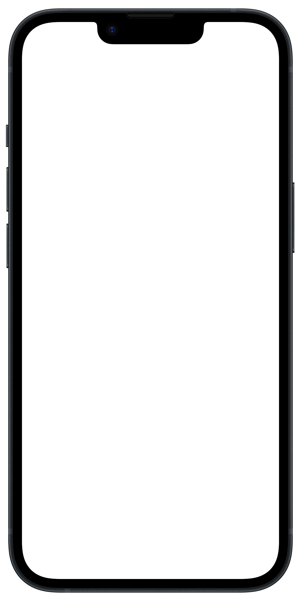

WORKS
制作実績
Works


アプリ開発
フード／ドリンク

nozaki kyohei
お魚UTコム
いつも利用している鮮魚店など、お気に入りの鮮魚店を
フォローすることで、最新情報を取得することが出来るなど、
鮮魚店を利用するお客様向けのアプリです。
▼osakanaUTcom
https://osakanautcom.com/アプリ開発
フード／ドリンク

nozaki kyohei
お魚UTコム鮮魚店
天候や海の状況、漁獲量に変動する商品状況について、
リアルタイムにお客様へ広告宣伝することが出来る
鮮魚店様向けのアプリです。
▼osakanaUTcom
https://osakanautcom.com/Others
-
社内向けシステムインフラコンサルタント
大小様々な規模のシステムのインフラ設計支援
-
プライベートクラウドの設計・構築・試験
Windows Server 2012
System Center製品群（Virtual Machine Manager、Operations Manager）
日立の運用管理ソフトウェア（JP1/Base、Integrated Manager）
PowerShellを用いたバッチシェルの作成
-
モバイル端末の導入支援・MDMでの運用管理
業務改善案をご提案し、ExcelVBAを駆使して月間数百～数千件規模の人事異動情報設定変更業務を効率化
-
デジタルサイネージシステムの開発
-
Webサイトコンテンツマネジメントシステムの改修（VB.NET）
-
SNSサービスの開発・運用管理
SNSサービスのスクラッチ開発
Windows Server、SQL Server
-
ビッグデータ分析基盤の運用管理
-
金融系システム移行プロジェクトのPMO
会議のファシリテーション・課題管理・問題解決
-
Javaを用いたプログラミングのマンツーマン家庭教師
プログラミング未経験者の方に、0から丁寧に指導
-
製造業ERPシステム移行プロジェクト
VBAを用いたツール作成
システム移行に伴う課題事項の整理